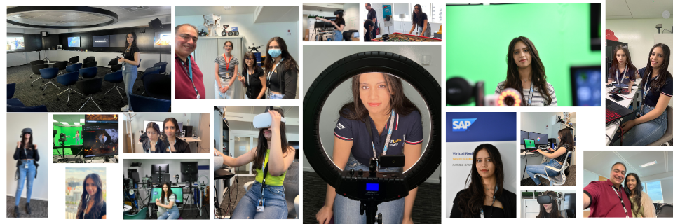

I am Roua and I welcome you to my digital oasis, where creativity meets purpose.
Take a look around and feel free to reach out!
About Me
I'm a passionate software engineer specialized in C++ development. I love solving complex problems and building immersive 3D experiences that feel smart, intuitive, and meaningful. I'm driven by curiosity and creativity, and I’m always exploring new ideas, tools, and techniques to push the boundaries of what I can build.
ENPC EDISER is a French company specializing in educational engineering. They design and produce educational content and solutions for driver training, vocational education, and road safety awareness. Their products include driving simulators, training programs, and educational materials.
I joined EDISER in May 2024 as a Software Engineer specializing in C++. Since then, I’ve worked on a heavy vehicle driving simulator developed in Unreal Engine, based on a previous simulation software originally built in a custom C++ engine.
Working within a team of six, I co-developed some of the simulator's core functionalities. My contributions included implementing a modular training generation system with scenario handling, sub-training management, and data layer control to facilitate and accelerate development. I designed a smart path guidance system that detects wrong turns, recalculates routes, and provides real-time visual/audio instructions.
I also developed a behaviour monitoring and error detection system to track student actions during training, as well as a State Tree–based system to enable dynamic training generation and AI-driven student tracking. More recently, I’ve been experimenting with AI logic to automate training creation, adapt difficulty levels, and generate scenario ideas based on performance data.
Journey At Alterland
01/2023 - 04/2024 Remote
Alterland is a Swiss startup founded in 2022, specializing in immersive virtual workspaces that enhance remote collaboration. By integrating Virtual Reality, Artificial Intelligence, and Unreal Engine, Alterland creates gamified environments designed to boost productivity, increase engagement, and provide employees with a seamless remote work experience.
At Alterland, I worked as a C++ developer contributing to the development of a virtual meeting platform in Unreal Engine. I implemented key features such as in-app meeting scheduling, calendar synchronization, and real-time voice/text chat using C++. I also integrated Auth0 for authentication and authorization directly within Unreal Engine.
My responsibilities included building a full C++ API integration for meeting management, including sending invites, retrieving data, and handling updates, and migrating the entire multiplayer system from Blueprints to C++ to improve performance and extensibility. I also developed a reusable UI framework and an in-app tutorial system using both C++ and Blueprints. Additionally, I conducted extensive research into technologies and design approaches to enhance the VR experience and help users use the app effectively.
Journey At SAP
02/05/2022 - 02/11/2022 On-Site

My 6-month internship at SAP marked the culmination of my 5-year end-of-study program. The focus was on developing a solution using Unreal Engine for medium and large companies. This solution aimed to facilitate all-hands and team meetings
while fostering employee connections and interactions. It also encouraged the exploration of innovative technologies such as VR, Blockchain, and Metaverse.
D-shop is the heart of innovation at SAP. It claims its missions as a space to try new technologies and to build up on super creative ideas that can help boost SAP's products. I am a D-shopper compaign is organized every year to
choose a member that presents D-shop with an innovative idea or prototype.
I was gladly selected for the year 2022 as a D-shopper presenting SAP Labs Paris.
4th Rank in SAP's D-shop Unreal Innovation Hackathon 2022
SAP's D-shop organizes an annual international hackathon where employees are encouraged to propose innovative ideas that contribute to SAP's existing products or have the potential to become new products. Participants collaborate
on developing prototypes for these ideas. The hackathon of 2022 focuses on Unreal Engine innovative experiences. I gladly ranked 4th with my project Xonveta.
Xonveta is an Unreal Engine multiplayer experience to host and attend remote company meetings. It is fully developed in C++ for Desktop and VR headsets.
Halloween Flashlab
The Halloween Flashlab Event, hosted by SAP Labs Paris is an instance of the broascasting project we started alongside Xonveta for employees who can't join the company meeting or don't have a VR headset.
Journey At XIX3D
01/09/2021 - 30/04/2022 Remote
XIX3D is a Canadian company specializing in the provision of car configuration software services. Zeno is XIX3D's most known software developed in Unreal Engine and offers functionalities of selecting custom cars, customizing them and
rendering the output. The software is vastly used by car wrap shops to help customers have a look and feel about how the final car wrap will look like. At XIX3D, the journey involves focusing on the features within ZenoX, which is
the advanced version of Zeno as well as wroking on the Zenoverse, XIX3D's metaverse. This entails a combination of Unreal Engine Development, Blockchain integration, and Metaverse technology.
In my role, I focused on enhancing the Zeno user interface and implementing Real-Time NFT minting functionality. Minting an NFT from ZenoX involves selecting a customized car, connecting your Metamask wallet to Unreal Engine, filling
out a metadata form, and minting the NFT through your wallet. I worked on the UI, car video rendering, gltf model exportation, and establishing the connection between Unreal Engine and the Ethereum blockchain using a Java Tomcat
server.
ZenoVerse
I developed a Virtual Reality multiplayer prototype for a metaverse using the XIX3D NFTs collection on Opensea. This platform allows clients to explore, purchase, customize, mint, and sell NFT cars. Additionally, I created a car
racing game within Zenoverse where clients can use their NFT cars to participate in thrilling races and earn additional NFTs. The prototype was developed in C++ using Unreal Engine, compatible with desktop platforms and VR
Meta Quest headsets.
The journey at EY as a cybersecurity analyst intern lasted for 1 month as a short internship. My main focus was on EY's csirt (Computer Security Incident Response Team) OSINT (Open Source Intelligence) solution. I contributed by developing
a Django API that facilitates the collection of intelligence information related to files, URLs, IP addresses, or domain names. The API leveraged various tools such as VirusTotal, Shodan, urlscan, and deep web search to assess the
security status of provided files or IP addresses, ensuring their safety.
Cybersecurity Analyst
The cybersecurity analyst journey at EY spanned a duration of 3 months, encompassing multiple responsibilities. I actively contributed to enhancing the Django API of EY's OSINT (Open Source Intelligence) solution. In addition, I deepened
the search for information by integrating MISP analyzers and various trusted OSINT solutions. During this time, I also had the opportunity to participate in EY's penetration testing missions. Specifically, I served as a red team member
in two network services pentest missions. My primary focus involved automating MITM (Man in the Middle) attack techniques. Within the company's network, I developed automated processes for installing packet sniffers capable of analyzing
and identifying insecure network communications to redirect the communication flow to an untrusted party. Throughout this experience, I played an active role in advancing EY's cybersecurity measures, strengthening their OSINT capabilities,
and contributing to the success of network services pentest missions.
Journey At Siyou
01/07/2020 - 31/08/2020 On-Site
Siyou Technology, an Italian company, specializes in innovative e-commerce solutions with a focus on B2S2C (Business to Supplier to Consumers) models. Their objective is to enhance business flexibility by creating a diverse range of B2B
(Business to Business) and B2C (Business to Consumer) solutions that are compatible with various devices.
During my 2-month summer internship as a software engineering intern at Siyou, my journey involved working on a B2B solution focused on managing the sales flow of a market business. This solution encompassed various functionalities such as authentication
through Google, Facebook, or email, local shop search capabilities, order placement, profile and order management, as well as handling payments.
For the API development of the B2B solution at Siyou, I utilized Django, a Python-based web framework known for its robustness and scalability. With Django, I created the backend API endpoints to handle various functionalities and data operations. In
the front-end development, I utilized Flutter, a popular cross-platform framework for building user interfaces. Flutter allowed me to develop the client-side application with a single codebase that could run on both iOS and Android
devices, providing a seamless and consistent user experience. To store and manage the data for the B2B solution, I employed PostgreSQL, a powerful and open-source relational database management system. PostgreSQL offered reliability,
data integrity, and the ability to handle complex queries and transactions required for the application. By combining Django for API development, Flutter for front-end development, and PostgreSQL as the database, I was able to create
a comprehensive and efficient system for the B2B solution at Siyou.
Siyou's apps and products are confidential and paid, for that reason, no pictures of them are displayed
ChaosFieldz is a multiplayer Battle Royale game developed entirely in C++ using Unreal Engine 5. The game features engaging gameplay mechanics, including player interactions, combat systems for dealing and receiving damage, and the utilization
of various weapons. Additionally, players can interact with pickups such as medkits, bottles of water, and backpacks to enhance their gameplay experience.
GalacticRush is an an exhilarating infinite runner game developed using C++ in Unreal Engine 5 where players interact with environmental obstacles like fire branches, water lakes, and rocks. They can also collect power-ups for health and
energy boosts. By combining fast-paced running mechanics with environmental obstacles and enticing power-ups, GalacticRush offers an engaging and action-packed gaming experience.
ChaosFieldz is a sci-fi-themed battle royale game with a gameplay average duration of 15 minutes. The game accommodates up to 40 players who are placed in a sci-fi village environment. Players must scavenge the map for crucial survival
pickups, including water, medkits, backpacks, weapons, and grenades. Strategic decision-making, such as determining the opportune moments to engage in combat or conceal oneself, becomes vital for survival in this intense gameplay experience.
Player Setup :
Animation System
The project incorporates an advanced animation blueprint setup for the player character, offering a range of fluid animations. This includes walking, sprinting, crouching, and various interactions with weapons, such as equipping, unequipping,
aiming, firing, reloading, and throwing grenades. Moreover, the player character can interact with pickups like medkits for healing and water for hydration. The system also accounts for damage-taking mechanics, triggering appropriate
animations for the victim player, and celebratory animations for the scoring player. The comprehensive animation blueprint setup enhances the overall gameplay experience and adds visual depth to the project.
Objects Interaction
The object interaction in the game is facilitated by pressing the designated hotkey "E". Depending on the nature of the object, the interaction process varies. If the object is a backpack, it will be attached to the player's back. Alternatively,
if it is a weapon, it will be attached to the player's hands for immediate use. In the case of pickups, such as consumables or items, they will be added to the player's backpack, and the inventory system will handle the interaction.
This interaction process also updates the in-game widget, providing real-time information about the player's inventory status.
Weaponry System :
The weaponry system in the game comprises various components, including weapons, ammo, magazines, and grenades. There are five types of weapons available: Assault Rifle, Shotgun, Sniper, and Grenade Launcher, alongside a pistol. Each weapon
possesses unique characteristics such as distinct firing and reloading animations, visual effects, default damage, range, magazine capacity, and ammo type. The Sniper weapon comes equipped with an 8X scope, enhancing precision for
long-range engagements. On the other hand, the Grenade Launcher allows players to choose the location of the grenade to be launched by utilizing the mouse's scroll wheel. To initiate firing, players utilize the left mouse button. The
system verifies if the weapon has sufficient ammo, and if the condition is met, it executes a line trace starting from the weapon's muzzle. Depending on the range of the weapon, the line trace detects and registers hits on the target.
In the case of the Grenade Launcher, it launches a grenade projectile that accurately delivers the explosive to the designated target location. By incorporating these mechanics, the game provides engaging and realistic shooting experiences
with distinct weapons and their associated functionalities.
Multiplayer Setup :
The multiplayer setup in the game allows for player interactions, including dealing damage, taking damage, and broadcasting death events to all connected players. Initially, only one player can emerge as the winner until duo and squad
gameplay modes are introduced. The amount of damage a player receives is calculated based on several factors, including the specific bone hit in the player's skeleton, the distance between the two players, and the weapon utilized.
For instance, a shot to the head bone with a Rifle or Sniper results in a fatal headshot. Upon a player's death, their inventory objects such as pickups and weapons are dropped on the ground, becoming available for other players to
pick up and utilize. The multiplayer setup employs a relevancy-oriented approach. Players can observe others equipping, reloading, firing, and dropping their weapons, which provides relevant information for gameplay interactions. However,
they won't be able to see another player picking up a medkit since this information is not deemed relevant to their gameplay experience.
User Interface :
The user interface in the game consists of several components. Firstly, the main widget incorporates the player's aiming crosshair, providing a visual reference for precise targeting. Secondly, the inventory widget displays the counts
of various pickups, allowing players to monitor their available resources. The player stats widget is responsible for presenting important indicators such as health, stamina, hunger, and thirst. These vital parameters are represented
using progress bars, offering a clear visualization of the player's status. Lastly, the weapon widget provides essential information about the currently equipped weapon, including details such as the weapon's name, ammo count, and
an option to drop the weapon if desired. By incorporating these UI elements, players can easily access and monitor crucial information during gameplay, enhancing their overall experience and decision-making.
GalacticRush Documentation
In GalacticRush, players assume the role of Rosales, who finds themselves trapped in an ancient religious temple and relentlessly pursued by a mutant creature. The objective is to escape from the monster by navigating through the temple's
treacherous obstacles, while also collecting power-ups and coins along the way. These coins can later be used to purchase additional power-ups, further enhancing the player's chances of survival.
Player Setup :
Animation System
The animation system revolves around player interactions with obstacles like running, turning left/right, rolling, high and low jumping as well as getting hit by obstacles like getting hit lightly and heavily as well as slipping in water.The
special animation part is the injury setup that launches on contact with a rock obstacle. The player runs, rolls and jums injured until healed.
Objects Interaction
During gameplay, players can interact with coins and power-ups. When the player overlaps with either a coin or a power-up, it is automatically collected and removed from the level. When interacting with a health or energy power-up, if
the player's immediate need for them is evident, they are automatically utilized. However, if the player doesn't require them immediately, they are added to the player's inventory, allowing them to choose when to use them at a later
time.
Damage System
The player in the game can sustain damage in three ways. Firstly, if the player gets hit by a fire branch or a water lake, they lose the game and are respawned for a new gameplay session. Secondly, being hit by a rock causes injury and
slows down the player's movement. This injury can be healed by utilizing health and energy power-ups. Lastly, if the player gets caught by the mutant, it results in a game loss.
Mutant Setup :
The mutant monster in the game is programmed to relentlessly chase the player. When the mutant gets extremely close to the player, it catches them, resulting in a game loss. However, after 4 seconds of initiating the chase, the mutant
disappears. If the player gets hit by an obstacle that doesn't lead to immediate death, the mutant reappears. The mutant has its own animation system and is hidden when it's not relevant to the current gameplay, optimizing GPU usage
and ensuring smoother gameplay experience.
User Interface :
The user interface (UI) in the game consists of several elements. Firstly, there is a score display that increments every second while the player is running, reflecting their progress. Additionally, there is a counter that keeps track
of the number of coins collected by the player. The UI also includes a visual representation of the player's energy level. Finally, an injury alarm is present to notify the player when they are injured and require attention.